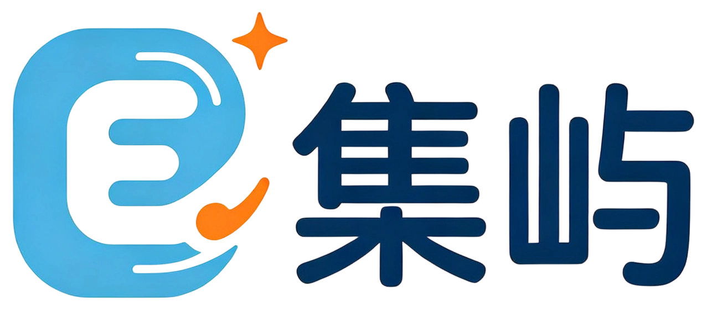

بىر ئورۇندىق سانلىق مەلۇمات مەنبەسى
ساپ قوراللار · مەنبە كودى · ئەمەلىي ئۇسۇللار
ئېلان يوق · چەكلىمە يوق · ئىلگىرىكى ئەڭگىمە يوق
كومپيۇتەر مۇھەببىتكارلىرى ۋە
مەكتەپ ئىشلىتىشچىلىرى ئۈچۈن
تېخنىكا بىلەن كېمە قىلىپ · مەنبە بىلەن ئارىلىق قىلىپ